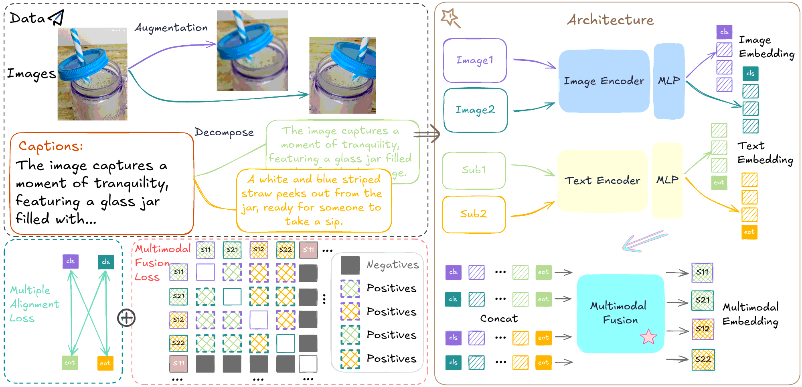
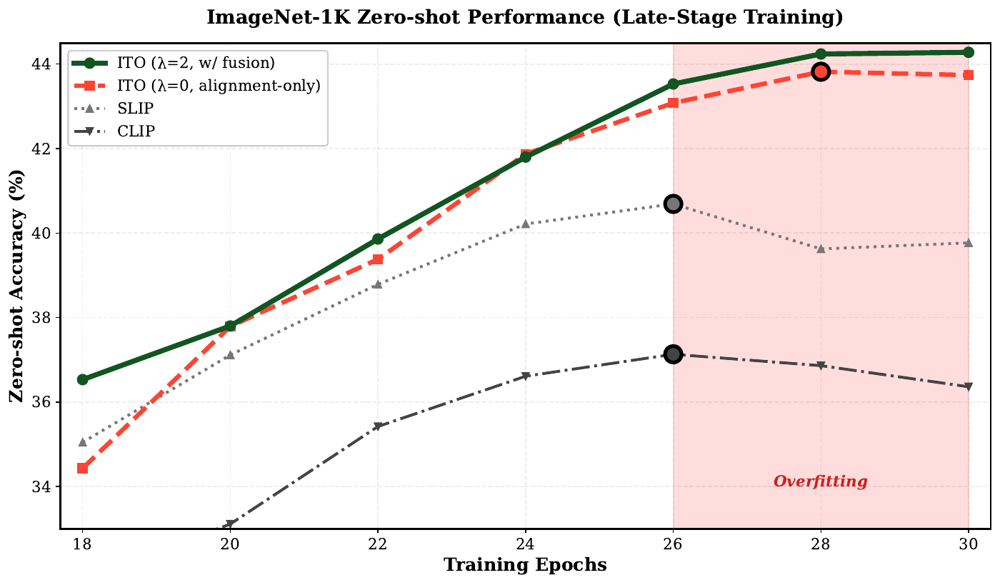

ITOMulti-View Alignment and Training-Time Fusion for Image-Text Pretraining
Hanpeng Liu1,2,∗
Yaqian Li2,†
Zidan Wang1
Shuoxi Zhang3
Zonglin Zhao1
Zihao Bo2
Rinyoichi Takezoe2
Kaiwen Long2
Kun He1,†
1 School of Computer Science and Technology, Huazhong University of Science and Technology
2 Li Auto Inc.
3 Institute of AI for Industries, Chinese Academy of Sciences
∗ Work done as a research intern at Li Auto Inc. † Corresponding authors
Two augmented views per image, and a small fusion Transformer that shapes both encoders during training. The fusion module is removed before deployment, so a trained ITO model is a standard CLIP dual encoder with the same inference cost.

Overview of ITO. Multiple augmented image–text pairs derived from the same sample enrich instance-level alignment, while training-time fusion encourages the encoders to produce features that are compatible under fusion. The fusion module is used only during training and discarded at inference.
Abstract
Image–text contrastive pretraining has become a dominant paradigm for visual representation learning, yet existing methods often yield representations that remain partially organized by modality rather than by semantics. We propose ITO, a framework addressing this limitation through two complementary mechanisms with distinct roles. Multimodal multiple alignment enriches supervision by constructing diverse cross-modal correspondences from multi-view image augmentations, providing the primary source of discriminative gain. A lightweight training-time multimodal fusion module then acts as a training-time regularizer, encouraging the encoders to produce features that are compatible under fusion.
Crucially, the fusion module is discarded at inference, preserving the efficiency of standard dual-encoder architectures while incurring training-time overhead only. Extensive experiments across pretraining scales from millions to billions of image–text pairs show that ITO outperforms strong contrastive baselines at moderate scale and yields consistent gains over CLIP under identical data, backbone, and compute at the 100M–1B scale, on classification, retrieval, and multimodal benchmarks. Controlled comparisons show that these gains are not explained by additional training compute or image augmentation alone. Our analysis further reveals that the contribution of fusion grows with data scale and that it stabilizes optimization, mitigating the late-stage overfitting commonly observed in aggressive contrastive learning.
Method
Two training signals, one CLIP encoder pair
ℒAlign
Multimodal multiple alignment
Each image is augmented twice (random resized crop with scale 0.5–1.0, color jitter, grayscale). Both views are contrasted with the same caption using the standard bidirectional InfoNCE loss, with the usual in-batch negatives. This doubles the cross-modal positives per sample and provides most of the accuracy gain.
ℒFusion
Training-time multimodal fusion
For each view, image tokens and text tokens are concatenated and passed through a 2-layer Transformer with bidirectional self-attention. The output at the image [CLS] position is the fused embedding. Gradients flow through the fusion module into both encoders without stop-gradient, so the encoders must produce tokens that stay discriminative after cross-modal attention.
1196 patch tokens (ViT-B/16, 224 px)77 text tokens
view 1
CLSimage patchesSOT … EOT · pad
→ fusion ×2 →S1
view 2
CLSimage patchesSOT … EOT · pad
→ fusion ×2 →S2
Fusion loss. The fused embeddings S1 and S2 of the same image–text pair are positives. Every other fused embedding in the batch, from either view, is a negative. Padding tokens are masked out as attention keys.
λ = 2 by default. Accuracy follows an inverted U in λ: it peaks at 2, and λ = 6 falls below the alignment-only setting.
Inference
Image encoderText encoderFusion module
Same cost as CLIP
The fusion module is dropped. The remaining encoders are a drop-in replacement for any CLIP model in zero-shot classification, retrieval, or as the vision backbone of a multimodal LLM.
Results
Consistent gains from 3M to 1B image–text pairs
Zero-shot classification
Average top-1 accuracy over 26 benchmarks, following the EVA-CLIP protocol. ViT-B/16, 30 epochs unless noted. All baselines are reproduced on the same data.
Pretraining data
CLIP
SLIP
SigLIP
FLAIR
ITO
CC3M
19.3
21.4
19.3
23.2
24.9+5.6
CC12M
34.1
36.0
35.0
35.5
38.4+4.3
YFCC15M
30.5
–
–
–
34.5+4.0
Laion100M
53.5
51.3
–
–
56.1+2.6
DataComp-1B, 1 epoch
54.2
–
–
–
56.6+2.4
Scaling on DataComp-1B
ViT-B/16, 10 epochs
63.7
–
–
–
64.9+1.2
ViT-L/16, 1 epoch
60.7
–
–
–
63.0+2.3
Gains are relative to CLIP. Billion-scale reruns of SLIP, SigLIP and FLAIR were beyond the compute budget, so CLIP is the controlled reference at large scale.
Where the gain comes from
Adding the two components to OpenCLIP one at a time. Multiple alignment gives the largest improvement. Fusion adds a smaller gain that grows with data scale: +0.6 zero-shot at 15M and +1.1 at 1B.
Setting
ZS IN-1k
Linear IN-1k
COCO I→T
COCO T→I
YFCC15M
OpenCLIP
36.4
51.8
26.4
15.1
+ multiple alignment (λ = 0)
43.7+7.3
60.2+8.4
30.6+4.2
19.6+4.5
+ training-time fusion (λ = 2)
44.3+0.6
60.5+0.3
30.8+0.2
19.5−0.1
DataComp-1B, 1 epoch
OpenCLIP
63.1
67.4
47.1
29.5
+ multiple alignment (λ = 0)
64.8+1.7
69.6+2.2
49.0+1.9
30.7+1.2
+ training-time fusion (λ = 2)
65.9+1.1
69.9+0.3
49.3+0.3
31.3+0.6
Each gain is relative to the row above it.
As the vision encoder of a multimodal LLM
LLaVA-1.5 protocol with Vicuna-7B and a frozen ViT-B/16 vision encoder pretrained by CLIP or ITO. ITO is better on all 13 benchmarks at 100M scale and on 11 of 13 at 1B scale.
Data
Encoder
VQAv2
GQA
T-VQA
SciQA-I
VizWiz
MMB-en
MMB-cn
MMVet
POPE-r
POPE-p
POPE-a
MMMU
MMStar
Laion100M
CLIP
66.53
56.36
47.55
65.44
36.80
53.69
46.13
18.30
84.09
82.90
76.40
33.60
28.87
ITO
68.47
57.23
48.71
66.29
44.25
54.12
46.65
19.80
84.74
83.63
77.30
33.90
29.13
DataComp-1B
CLIP
70.42
57.93
50.24
65.00
45.28
48.45
55.67
18.40
83.63
82.71
78.63
34.00
29.33
ITO
73.19
59.99
50.89
66.24
42.92
50.52
58.85
21.90
85.46
84.23
80.46
33.90
31.13
Bold marks the better encoder in each column and data block. DataComp-1B uses the 10-epoch models.
Analysis
Fusion works as a regularizer

Late-stage training on YFCC15M (ViT-B/16, zero-shot ImageNet-1K). CLIP and SLIP decline after their peak. Alignment alone (λ = 0) raises accuracy but still dips at the end. With fusion (λ = 2), accuracy holds through epoch 30.
The λ = 0 and λ = 2 variants differ only in the fusion module. Three observations point to fusion acting on optimization rather than adding a new source of supervision:
Its gain grows with scale and training length. Zero-shot ImageNet-1K improves by +0.6 at 15M and +1.1 at 1B. On YFCC15M, training for 60 instead of 30 epochs turns the COCO T→I change from −0.1 into +0.9.
It suppresses late-stage overfitting, as the training curves show.
Its effect is non-monotone in λ. Too strong a fusion signal (λ = 6, 43.2) falls below no fusion (λ = 0, 43.7).
The gains are not explained by extra compute. On YFCC15M, CLIP trained for 60 epochs reaches 37.3 zero-shot, while ITO at 30 epochs reaches 44.3. Training ITO costs about 2.2× the time and 2.1–2.3× the peak GPU memory of OpenCLIP. Inference cost is unchanged.
Citation
BibTeX
@inproceedings{liu2026ito,
title = {ITO: Multi-View Alignment and Training-Time Fusion for Image-Text Pretraining},
author = {Liu, Hanpeng and Li, Yaqian and Wang, Zidan and Zhang, Shuoxi and Zhao, Zonglin and Bo, Zihao and Takezoe, Rinyoichi and Long, Kaiwen and He, Kun},
booktitle = {Advances in Neural Information Processing Systems (NeurIPS)},
year = {2026}
}